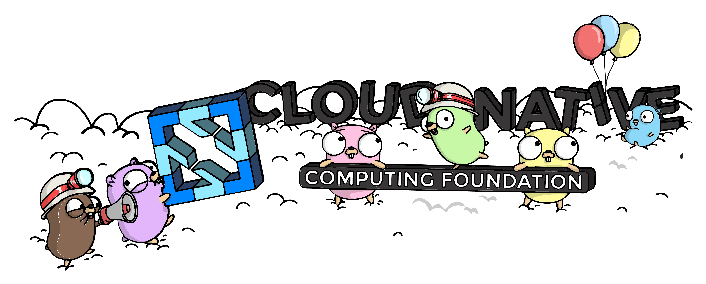
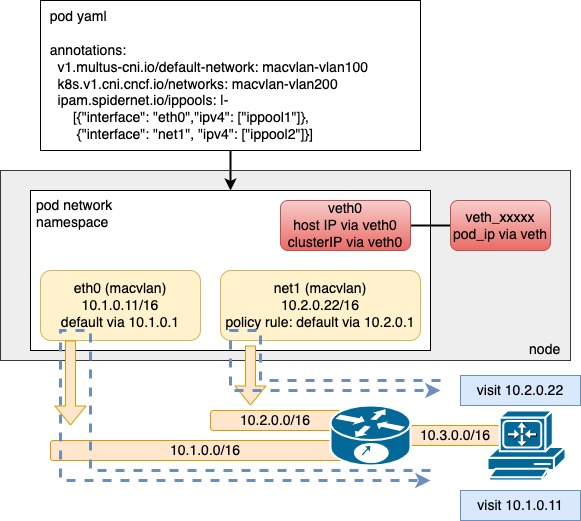
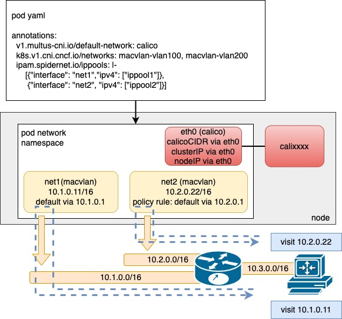
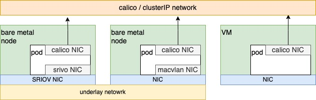

Spiderpool


English | 简体中文
Spiderpool is a CNCF Landscape Level Project.

Introduction
Spiderpool is a Kubernetes underlay network solution. It provides rich IPAM features and CNI integration capabilities, powering CNI projects in the open source community, allowing multiple CNIs to collaborate effectively. It enables underlay CNI to run perfectly in environments such as bare metal, virtual machines, and any public cloud.
Why developing Spiderpool? Currently, the open source community does not provide comprehensive, friendly, and intelligent underlay network solutions, so Spiderpool aims to provide many innovative features:
-
Rich IPAM feature. Shared and dedicated IP pools, assigning fixed IP address, automatic operation of dedicated IP pools for creating, scaling, and reclaiming. It could match kinds of underlay network requirements.
-
Underlay CNI and overlay CNI cooperation, multiple CNI interfaces for pod. Spiderpool helps assign IP address to multiple underlay interfaces, coordinate policy route between interfaces to ensure consistence data path of request and reply packets. Multiple CNIs cooperate to reduce hardware requirements for deploying the cluster.
-
Enhance underlay CNI like Macvlan CNI, ipvlan CNI, SR-IOV CNI, ovs CNI to connect Pod and host to access clusterIP and check pod health, and to detect IP conflict and gateway accessibility.
-
Not only limited to bare metal environments in data centers, but also providing a unified underlay CNI solution for openstack, vmware, and various public cloud scenarios.
underlay CNI
There are two technologies in cloud-native networking: "overlay network" and "underlay network". Despite no strict definition for underlay and overlay networks in cloud-native networking, we can simply abstract their characteristics from many CNI projects. The two technologies meet the needs of different scenarios.
The article provides a brief comparison of IPAM and network performance between the two technologies, which offers better insights into the unique features and use cases of Spiderpool.
Why underlay network solutions? The following requirements necessitate underlay network solutions:
-
Network performance. Network performance advantages, like low latency, high throughput, low forwarding overhead of node’s CPU. It fits to applications like financial and AI application.
-
Transformation cost. The traditional host application has characteristic, like exposing service with host fixed IP, separating communication with different subnets. At the beginning of migrating to the kubernetes, the underlay network solution spend low transformation cost of netowrk, application can directly use Pod IP for cluster east-west and north-south communication.
-
Network security. In the data center, it may be used to enforce network security to Pod, like firewall and isolating communication with VLAN. The underlay network solution could expose the Pod packet without tunnel encapsulation, and meet requirements.
-
Bandwitdth. It can help Pod to customize the exit network interface of the node, thereby ensuring bandwidth isolation of the underlying subnet. It can help components such as kubevirt, storage, and logging, to transmit massive amounts of data.
-
Multi clusters. For multi clusters, all Pods of multi clusters are connected to the underlay network, so they could communicate smoothly without the need to deploy additional components for cluster connectivity.
Architecture

Spiderpool consists of the following components:
-
Spiderpool controller: deployment that manage CRD validation, status updates, IP recovery, and automated IP pools
-
Spiderpool agent: daemonset that help Spiderpool plugins by performing IP allocation and coordinator plugin for information synchronization.
-
IPAM plugin: a binary plugin on each host that CNI can utilize to implement IP allocation.
-
coordinator plugin: a binary plugin on each host that CNI can use for multi-NIC route coordination, IP conflict detection, and host connectivity.
-
ifacer plugin: A binary plugin on each host that helps CNIs such as macvlan and ipvlan dynamically create bond and vlan interfaces
On top of its own components, Spiderpool relies on open-source underlay CNIs to allocate network interfaces to Pods. You can use Multus CNI to manage multiple NICs and CNI configurations.
Any CNI project compatible with third-party IPAM plugins can work well with Spiderpool, such as:
Macvlan CNI, vlan CNI, ipvlan CNI, SR-IOV CNI, ovs CNI, Multus CNI, Calico CNI, Weave CNI
Use case: underlay CNIs access layer2

In underlay networks, Spiderpool can work with underlay CNIs such as Macvlan CNI , SR-IOV CNI, ipvlan CNI to provide the following benefits:
-
Rich IPAM capabilities for underlay CNIs, including shared/fixed IPs, multi-NIC IP allocation, and dual-stack support
-
One or more underlay NICs for Pods with coordinating routes between multiple NICs to ensure smooth communication with consistent request and reply data paths
-
Enhanced connectivity between open-source underlay CNIs and hosts using additional veth network interfaces and route control. This enables clusterIP access, local health checks of applications, and much more
How can you deploy containers using a single underlay CNI, when a cluster has multiple underlying setups?
-
Some nodes in the cluster are virtual machines like VMware that don't enable promiscuous mode, while others are bare metal and connected to traditional switch networks. What CNI solution should be deployed on each type of node?
-
Some bare metal nodes only have one SR-IOV high-speed NIC that provides 64 VFs. How can more pods run on such a node?
-
Some bare metal nodes have an SR-IOV high-speed NIC capable of running low-latency applications, while others have only ordinary network cards for running regular applications. What CNI solution should be deployed on each type of node?
By simultaneously deploying multiple underlay CNIs through Multus CNI configuration and Spiderpool's IPAM abilities, resources from various infrastructure nodes across the cluster can be integrated to solve these problems.

For example, as shown in the above diagram, different nodes with varying networking capabilities in a cluster can use various underlay CNIs, such as SR-IOV CNI for nodes with SR-IOV network cards, Macvlan CNI for nodes with ordinary network cards, and ipvlan CNI for nodes with restricted network access (e.g., VMware virtual machines with limited layer 2 network forwarding).
Use case: adding an auxiliary underlay CNI NIC for overlay CNI

In overlay networks, Spiderpool uses Multus to add an overlay NIC (such as Calico or Cilium) and multiple underlay NICs (such as Macvlan CNI or SR-IOV CNI) for each Pod. This offers several benefits:
-
Rich IPAM features for underlay CNIs, including shared/fixed IPs, multi-NIC IP allocation, and dual-stack support.
-
Route coordination for multiple underlay CNI NICs and an overlay NIC for Pods, ensuring the consistent request and reply data paths for smooth communication.
-
Use the overlay NIC as the default one with route coordination and enable local host connectivity to enable clusterIP access, local health checks of applications, and forwarding overlay network traffic through overlay networks while forwarding underlay network traffic through underlay networks.
The integration of Multus CNI and Spiderpool IPAM enables the collaboration of an overlay CNI and multiple underlay CNIs. For example, in clusters with nodes of varying network capabilities, Pods on bare-metal nodes can access both overlay and underlay NICs. Meanwhile, Pods on virtual machine nodes only serving east-west services are connected to the Overlay NIC. This approach provides several benefits:
-
Applications providing east-west services can be restricted to being allocated only the overlay NIC while those providing north-south services can simultaneously access overlay and underlay NICs. This results in reduced Underlay IP resource usage, lower manual maintenance costs, and preserved pod connectivity within the cluster.
-
Fully integrate resources from virtual machines and bare-metal nodes.

Use case: underlay CNI on public cloud and VM
It is hard to implement underlay CNI in public cloud, openstack, vmvare. It requires the vendor underlay CNI on specific environments, as these environments typically have the following limitations:
- The IAAS network infrastructure implements MAC restrictions for packets. On the one hand, security checks are conducted on the source MAC to ensure that the source MAC address is the same as the MAC address of VM network interface. On the other hand, restrictions have been placed on the destination MAC, which only supports packet forwarding by the MAC address of VM network interfaces.
The MAC address of the Pod in the common CNI plugin is newly generated, which leads to Pod communication failure.
- The IAAS network infrastructure implements IP restrictions on packets. Only when the destination and source IP of the packet are assigned to VM, packet could be forwarded rightly.
The common CNI plugin assigns IP addresses to Pods that do not comply with IAAS settings, which leads to Pod communication failure.
Spiderpool provides IP pool based on node topology, aligning with IP allocation settings of VMs. In conjunction with ipvlan CNI, it provides underlay CNI solutions for various public cloud environments.
Quick start
Refer to Quick start, set up a cluster quickly.
Major features
- For applications requiring static IP addresses, it could be supported by IP pools owning limited IP adddress set and pod affinity. See example for more details.
For applications not requiring static IP addresses, they can share an IP pool. See example for more details.
-
For stateful applications, IP addresses can be automatically fixed for each Pod, and the overall IP scaling range can be fixed as well. See example for more details.
-
Subnet feature, on the one hand, could help to separate the responsibility from the infrastructure administrator and the application administrator.
On the other hand, it supports to automatically create and dynamically scale the fixed IP ippools to each applcation requiring static IPs. which could help reduce operation burden of IP pools burden. See example for more details. In additional to kubernetes-native controller, subnet feature also supports third-party pod controllers based on operator. See example for details.
-
For Pods of an application run across different network zones, it could assign IP addresses of different subnets. See example for details.
-
Support to assign IP address from different subnets to multiple NICs of a Pod, and help coordinate policy route between interfaces to ensure consistent data path of request and reply packets.
For scenarios involving multiple Underlay NICs, please refer to the example.
For scenarios involving one Overlay NIC and multiple Underlay NICs, please refer to the example.
-
It supports to set default IP pools for the cluster or for the namespace. Besides, A IP pool could be shared by the whole cluster or bound to a specified namespace. See example for details.
-
Strengthen CNI like Macvlan CNI, ipvlan CNI, SR-IOV CNI, ovs CNI, to access clusterIP and pod healthy check (example), to detect IP conflict and gateway reachability (example).
-
Node-based IP pool feature meets the complex subnet design of each node. refer to example
-
On vmware vsphere platform, Spiderpool underlay network solution does not require "hybrid forwarding" mode of the Vswitch, which ensures the network performance of vsphere platform. refer to example
-
Spiderpool underlay network solution could run on public cloud of any vendors, and openstack platform, which could meet needs of multi cloud and hybrid cloud with unified CNI stack。refer to alibabaCloud
-
When starting the Pod, it could help dynamically build the bond interface and vlan interface for the master interface of Macvlan CNI, ipvlan CNI. See example for details.
-
It could specify customized routes by IP pool and pod annotation. See example for details.
-
Easy generation of Multus NetworkAttachmentDefinition custom resources with best-practice CNI configuration, also ensure well formatted JSON to improve experience. See example for details.
-
Multiple IP pools can be set for the application for prevent IP address from running out. See example for details.
-
Set reserved IPs that will not be assigned to Pods, it can avoid misusing IP addresses already taken by hosts out of the cluster. See example for details.
-
Outstanding performance for assigning and releasing Pod IPs, showcased in the test report.
-
Well-designed IP reclaim mechanism could help assign IP address in time and quickly recover from the breakdown for the cluster or application. See example for details.
-
All above features can work in ipv4-only, ipv6-only, and dual-stack scenarios. See example for details.
-
Support AMD64 and ARM64.